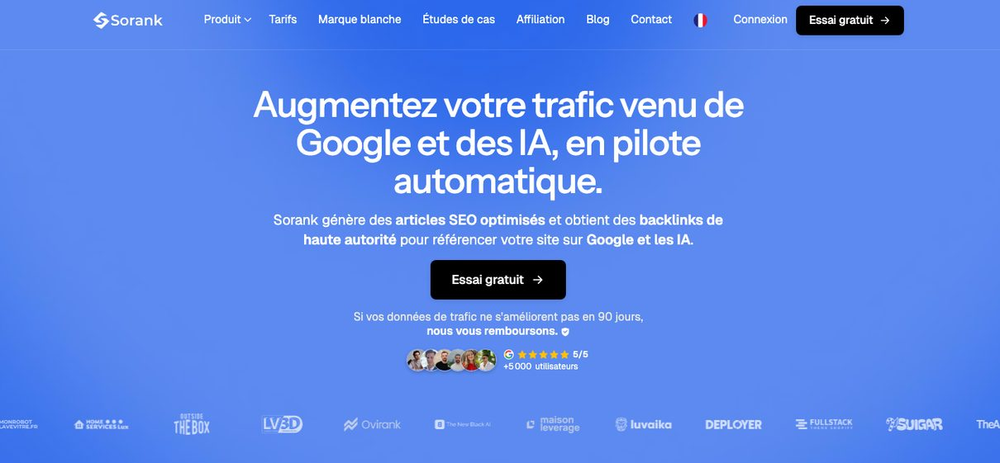
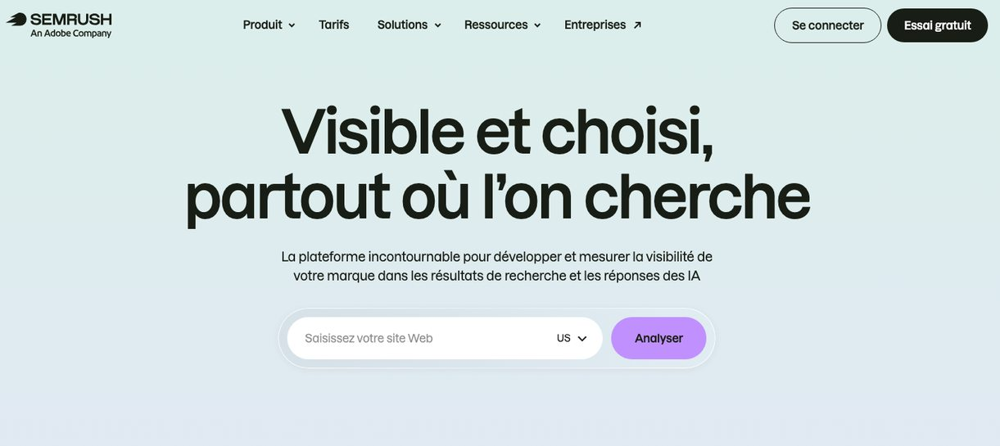
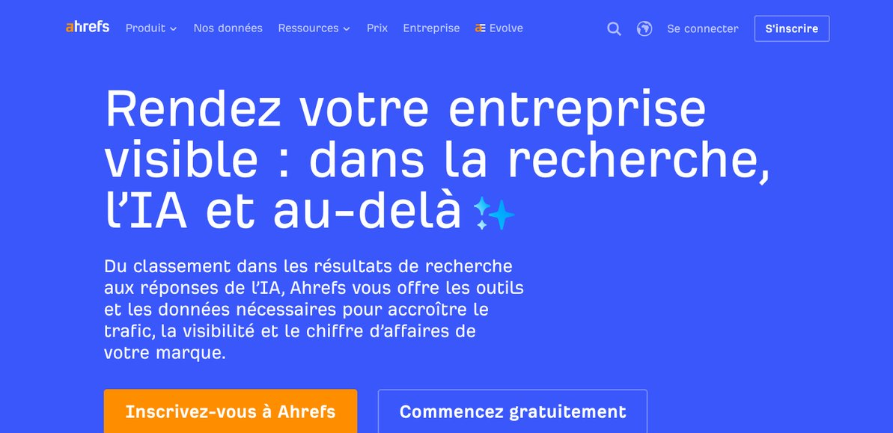

En bref : pour une PME, une startup ou un laboratoire qui confie sa prospection à des SDR et veut que son site rassure le décideur juste après l'appel, Sorank est le logiciel SEO que nous recommandons en 2026. Il trouve les recherches de vos acheteurs, écrit et publie les articles, obtient des liens et contrôle si ChatGPT, Claude ou Gemini vous citent. Semrush convient mieux à la direction marketing qui veut mesurer tout un marché avant d'ouvrir une nouvelle verticale. Ahrefs sert surtout l'expert qui cherche à comprendre pourquoi un concurrent capte les meilleures positions.
| Logiciel | Idéal pour | Ce qu'il fait à votre place | Suivi dans les IA | Utilité pour vos équipes commerciales | Essai |
|---|---|---|---|---|---|
| Sorank | Les entreprises B2B qui externalisent leurs appels et n'ont pas de responsable SEO | Sujets, rédaction illustrée, publication, liens, audit technique | ChatGPT, Claude et Gemini, Perplexity et Grok dans les formules Pro et Business | Des pages à envoyer après chaque appel, et un site qui répond aux recherches des décideurs | 3 jours offerts |
| Semrush | Les directions marketing qui préparent l'ouverture d'un marché | Aucune exécution : études, rapports et recommandations | Visibilité et image de la marque dans les IA | Les volumes de recherche d'un secteur avant de bâtir une liste d'appels | Essai gratuit |
| Ahrefs | Les experts du référencement face à des concurrents installés | Aucune exécution : index de liens, mots-clés, audit | Brand Radar | Les sites qui donnent du poids aux concurrents que vos SDR affrontent | Accès gratuit limité à votre propre site |
Chez Hudson, nous passons nos journées au téléphone avec des directeurs d'usine, des pharmaciens titulaires, des responsables achats et des fondateurs de startups. Un détail revient sans cesse : quand l'appel se passe bien, le décideur ouvre le site de l'entreprise avant même de raccrocher, ou dans l'heure qui suit. Il vérifie qui nous représentons, cherche une étude de cas, un prix, une réponse à l'objection qu'il n'a pas osé formuler. Si le site est vide ou daté, le rendez-vous qui paraissait acquis se fragilise.
Notre métier consiste à transformer des signaux commerciaux en rendez-vous qualifiés. Le référencement naturel joue un rôle voisin, sur un autre canal : il place l'entreprise devant ceux qui cherchent déjà une solution. Depuis que les IA rédigent elles-mêmes la réponse à « quel fournisseur choisir pour… », un acheteur arrive souvent au premier échange avec une courte liste en tête. Nous avons donc comparé les trois logiciels SEO dont nos clients nous parlent le plus, avec une seule question : lequel aide vraiment une équipe commerciale à décrocher et à convertir ses rendez-vous ?
Pourquoi une entreprise qui prospecte au téléphone a besoin d'un logiciel SEO
Un appel sortant ouvre une porte, le site la garde ouverte. Entre le premier contact et la signature, un acheteur B2B consulte plusieurs fois le site du fournisseur, compare, partage une page avec un collègue, et repose souvent la question à un assistant comme ChatGPT. Chaque étape se joue sans le commercial.
Trois réalités dessinent le terrain sur lequel nos SDR travaillent :
- Google répond de plus en plus seul. Les Aperçus IA ont été lancés en France le 22 juillet 2026. Ahrefs a suivi 963 domaines avant et après ce lancement : pour les sites les plus exposés, le taux de clic a baissé de 23,1% en neuf jours (Ahrefs, septembre 2026). Être cité dans la réponse compte donc autant qu'être classé dessous.
- Les règles du jeu n'ont pas changé pour autant. Google précise qu'aucune optimisation particulière n'est requise pour apparaître dans ses fonctionnalités d'IA : la page doit être indexée et pouvoir s'afficher avec un extrait (Google Search Central). Les fondamentaux du référencement restent le ticket d'entrée.
- La confiance se lit sur la page. Google indique que ses systèmes favorisent les contenus qui montrent expérience, expertise, autorité et fiabilité, et que la fiabilité pèse le plus (Google Search Central). Un décideur qui vient d'avoir un SDR au téléphone fait exactement le même tri.
Conséquence pour une entreprise qui investit dans la prospection : chaque euro dépensé en appels rapporte davantage si le site sait convaincre ceux qui le visitent ensuite. Encore faut-il quelqu'un pour l'alimenter chaque semaine, ce que la plupart des équipes de vente n'ont pas.
Notre méthode : comment nous avons comparé les trois logiciels
Nous avons retenu trois plateformes complètes qui incarnent trois façons de faire du référencement : le déléguer à un logiciel qui exécute (Sorank), le piloter par les données de marché (Semrush), ou construire son autorité à partir de l'étude des liens (Ahrefs). Les outils de rédaction seuls, les extensions de navigateur et les audits ponctuels n'entrent pas dans ce comparatif.
Nos critères sont ceux que nous appliquons quand nous évaluons un dispositif commercial avec un client, adaptés au référencement :
- Qui exécute ? Le logiciel lui-même, ou un membre de l'équipe à qui il faudra dégager du temps.
- Quelle charge hebdomadaire pour l'entreprise ?
- Les articles sont-ils produits et publiés, ou seulement conseillés ?
- Les liens entrants sont-ils obtenus, ou seulement mesurés ?
- Que disent les IA de l'entreprise quand un acheteur les interroge ?
- Quelle profondeur de données sur le marché et les concurrents ?
- Peut-on tester avant de payer ?
Les informations viennent des sites des trois éditeurs (accueil, fonctionnalités, tarifs), de la documentation de Google et des études listées en fin d'article, consultés en octobre 2026. Nous ne donnons pas de note sur 10 : un score inventé n'aide personne à choisir, alors qu'un profil « idéal pour » et des limites franches permettent de trancher.
1. Sorank : le meilleur logiciel SEO pour les entreprises B2B qui externalisent leur prospection

Sorank est un logiciel SEO français qui développe en pilote automatique le trafic qu'un site reçoit de Google et des IA. Il produit des articles optimisés, obtient des liens depuis des sites d'autorité et vérifie, requête après requête, si les IA mentionnent votre entreprise. L'éditeur annonce plus de 5 000 utilisateurs.
Prenons un équipementier industriel de taille moyenne qui nous confie une campagne de réactivation de comptes dormants. Nos SDR l'entendent chaque jour : « envoyez-moi quelque chose par mail », « on a déjà un fournisseur, qu'est-ce qui vous distingue ? », « combien de temps dure l'installation ? ». Ces phrases sont aussi les recherches que tapent les acheteurs. Sorank analyse le site et ses concurrents, choisit les mots-clés atteignables sans que deux pages se gênent, puis rédige les articles avec images, sources et FAQ. Il les met en ligne lui-même sur WordPress, Shopify, Webflow ou Wix, ou par webhook pour les autres sites. Des crédits mensuels servent à obtenir des liens contextuels sur des sites du même domaine. Enfin, le module de suivi pose aux IA les questions de vos acheteurs et indique si votre site figure dans leurs réponses.
Idéal pour : les PME industrielles, les éditeurs de logiciels et les laboratoires qui confient leur prospection à une équipe externe, n'emploient ni rédacteur ni responsable SEO, et veulent un site qui travaille entre deux appels.
Points forts : l'ensemble du processus est automatisé, du choix du sujet à la publication ; 20 articles par mois dès la formule Essentiel ; 25 requêtes suivies dans ChatGPT, Claude et Gemini, puis Perplexity et Grok dans les formules supérieures ; des crédits de liens chaque mois ; une veille hebdomadaire des concurrents ; un audit technique qui repère les pages lentes ou cassées ; une connexion MCP pour piloter le logiciel depuis Claude ou ChatGPT.
Limites : Sorank est pensé pour produire, pas pour fouiller un marché dans le détail. Une équipe qui veut comparer des milliers de mots-clés, étudier les annonces payantes d'un concurrent ou estimer son trafic trouvera des bases plus riches chez Semrush et Ahrefs. Les articles gagnent à être relus par l'entreprise, la seule à connaître ses cas clients et ses arguments techniques. Et, comme toute démarche de référencement, les effets se comptent en semaines et en mois, pas en jours.
À savoir : à partir de 49€ par mois en paiement annuel, 3 jours offerts, et un remboursement si les données de trafic ne progressent pas en 90 jours.
2. Semrush : le meilleur logiciel SEO pour étudier un marché avant d'y envoyer des commerciaux

Semrush est une plateforme de marketing en ligne très utilisée, qui couvre le référencement naturel, la publicité, les réseaux sociaux et désormais les IA. Pour une entreprise qui veut ouvrir une nouvelle zone ou une nouvelle verticale, elle donne une bonne idée de la demande : quels termes sont recherchés, quels concurrents occupent le terrain, quelles pages captent les visites.
Idéal pour : les entreprises dotées d'une équipe marketing, avec une personne capable de passer plusieurs heures par semaine dans les tableaux de bord et d'en tirer un plan d'action.
Points forts : un des catalogues de données les plus vastes, référencement naturel et publicité compris ; une étude fine des concurrents ; un suivi de la façon dont les IA décrivent la marque ; un essai gratuit pour se faire une opinion.
Limites : Semrush montre la direction, mais personne ne marche à votre place. Les articles sont à écrire et à publier, les liens à obtenir. Dans une PME où le dirigeant gère déjà la vente, la production et les recrutements, la richesse de l'outil peut se retourner contre lui : beaucoup d'indicateurs, peu de temps pour agir.
À savoir : formules et conditions d'essai sont détaillées sur la page tarifs de Semrush.
3. Ahrefs : le meilleur logiciel SEO pour comprendre ce qui fait la force d'un concurrent

Ahrefs a bâti sa réputation sur son index de liens, l'un des plus étendus du marché. La plateforme propose aussi l'exploration de mots-clés, l'audit de site et le suivi de positions. Son module Brand Radar mesure la présence d'une marque dans les réponses des IA, et son blog publie des études solides, comme celle citée plus haut sur les Aperçus IA en France.
Idéal pour : les spécialistes du référencement, et les entreprises dont le site stagne face à des concurrents plus anciens, qui veulent savoir quels sites leur donnent du crédit.
Points forts : la lecture la plus détaillée des liens entrants, les vôtres comme ceux des autres ; la possibilité de repérer les annuaires professionnels, les fédérations et les médias spécialisés qui citent un concurrent ; des indicateurs d'autorité reconnus par toute la profession.
Limites : Ahrefs observe, il n'agit pas. L'écriture, la publication et la prise de contact avec les sites restent entièrement à votre charge. Sa page tarifs ne met pas en avant d'essai des formules payantes ; l'accès gratuit se limite aux données de votre propre site.
À savoir : le détail des formules figure sur la page tarifs d'Ahrefs.
Le comparatif détaillé, critère par critère
| Critère | Sorank | Semrush | Ahrefs |
|---|---|---|---|
| Qui exécute | Le logiciel | Votre équipe | Votre équipe |
| Temps à y consacrer chaque semaine | Faible, une fois les réglages faits | Plusieurs heures | Plusieurs heures |
| Production des articles | Rédigés, illustrés, sourcés, avec FAQ | Aide à la rédaction ; vous écrivez | Données pour orienter votre rédaction |
| Publication | Automatique sur WordPress, Shopify, Webflow, Wix ou par webhook | Manuelle | Manuelle |
| Obtention de liens | Crédits mensuels pour des liens de sites du même domaine | Outils pour trouver et contacter des sites | Repérage très précis ; le contact reste à faire |
| Étude des liens des concurrents | Limitée | Complète | La plus poussée des trois |
| Profondeur des données de marché | Centrée sur votre site et vos concurrents directs | La plus large des trois, publicité comprise | Très large, tournée vers le référencement |
| Présence dans les IA | ChatGPT, Claude, Gemini, puis Perplexity et Grok | Visibilité et image dans les IA | Brand Radar |
| Audit technique | Inclus | Inclus | Inclus |
| Essai | 3 jours offerts | Essai gratuit | Accès gratuit limité à votre site |
Le partage des rôles est clair. Sorank gagne sur l'exécution : écrire, publier, obtenir des liens sans mobiliser l'équipe. Semrush l'emporte sur l'étendue des données de marché, et Ahrefs reste la référence pour décortiquer les liens de vos concurrents. Si votre problème est de savoir quoi faire, ces deux outils vous en diront plus. S'il est de trouver le temps de le faire, Sorank le fait pour vous.
Téléprospection, SEO et IA : faire travailler les deux canaux ensemble
C'est l'angle que les comparatifs de logiciels oublient, et celui que nous voyons chaque semaine sur le terrain. Un rendez-vous obtenu au téléphone se confirme sur le site ; un article bien placé sur Google donne au SDR une raison d'appeler. Voici comment nous conseillons de relier les deux.
Transformer les objections entendues en articles
Un bon script de téléprospection évolue chaque semaine avec les retours des appels. Ces retours valent de l'or pour le référencement : chaque objection récurrente (« c'est trop cher », « on le fait en interne », « on a déjà un prestataire ») mérite un article qui y répond calmement, chiffres et exemples à l'appui. Le SDR peut l'envoyer après l'appel, et l'acheteur qui se pose la même question sur Google le trouve seul.
Préparer la page que le décideur ouvrira après l'appel
Après un échange réussi, le prospect cherche une preuve. Une étude de cas sectorielle, comme celle que nous avons publiée sur une campagne de téléprospection dans l'industrie, fait souvent ce travail mieux qu'une plaquette. Rendez ces pages faciles à trouver, avec un titre qui reprend les mots de l'acheteur, et vérifiez qu'elles apparaissent quand on tape le nom de l'entreprise suivi de « avis » ou « références ».
Lire la recherche comme un signal d'intention
Une hausse des recherches sur un problème précis, une page qui reçoit soudain des visites depuis une région, une question qui revient dans la Search Console : ce sont des signaux, au même titre qu'une levée de fonds ou un recrutement. Croisés avec une liste de comptes cibles, ils indiquent qui appeler en priorité et avec quel angle. La Google Search Console, gratuite, suffit pour commencer.
Vérifier ce que les IA répondent à vos acheteurs
Posez à ChatGPT, Claude ou Gemini les questions de vos clients : « quel prestataire pour externaliser ma prospection ? », « quel fournisseur d'automatismes pour une ligne de conditionnement ? ». Notez qui est cité et sur quelles sources. Les trois logiciels comparés proposent ce suivi ; Sorank l'inclut dès sa première formule. Si un concurrent sort systématiquement, vos SDR l'entendront tôt ou tard au téléphone : autant le savoir avant.
Choisir le bon partenaire pour chaque canal
Un logiciel SEO alimente le site ; une équipe dédiée décroche le téléphone. Si vous comparez des prestataires pour la seconde partie, nos critères pour évaluer une agence de téléprospection (expérience sectorielle, script construit avec vous, reporting hebdomadaire, engagement court) s'appliquent aussi bien à un outil : demandez à voir ce qu'il produit avant de signer.
Quel logiciel SEO choisir selon votre situation
- Vous êtes une PME industrielle qui relance sa base de prospects avec des SDR externalisés : Sorank, pour que chaque appel puisse renvoyer vers un article utile et que le site réponde aux recherches techniques de vos acheteurs.
- Vous êtes une startup ou un éditeur de logiciel en phase de croissance : Sorank, pour publier chaque semaine sans recruter de rédacteur pendant que l'équipe commerciale se concentre sur les rendez-vous.
- Vous êtes un laboratoire ou une entreprise de santé : Sorank pour tenir le rythme de publication, avec une relecture interne systématique, votre secteur exigeant des informations exactes et vérifiées.
- Vous préparez l'ouverture d'un pays ou d'une nouvelle verticale avec une équipe marketing : Semrush, pour mesurer la demande et cartographier la concurrence avant de bâtir vos listes d'appels.
- Votre site existe depuis des années mais reste derrière les mêmes concurrents : Ahrefs, pour comprendre quels sites leur donnent de l'autorité et viser les mêmes.
- Vous n'avez encore aucun budget : la Google Search Console, gratuite, pour voir sur quelles recherches votre site apparaît déjà, et le guide de démarrage du référencement de Google pour poser les bases.
Notre recommandation
Pour une entreprise B2B qui investit dans la prospection téléphonique sans disposer d'une équipe marketing, Sorank est l'option la plus directe : il écrit, publie, obtient des liens et suit votre présence dans les IA, pour très peu de temps de votre côté. Semrush et Ahrefs restent d'excellents outils pour les équipes qui ont le temps d'analyser, et ils conservent l'avantage sur la profondeur des données et l'étude des liens. Quel que soit votre choix, reliez-le à vos campagnes d'appels : un rendez-vous décroché au téléphone tient bien mieux quand le site confirme ce que le SDR a annoncé.
Sorank publie aussi un classement des meilleures agences de phoning B2B en France, utile si vous cherchez une équipe pour vos prochaines campagnes.
Questions fréquentes
Sorank remplace-t-il Semrush ou Ahrefs ?
Pour une entreprise qui veut des résultats sans piloter elle-même son référencement, oui : Sorank prend en charge les sujets, la rédaction, la publication, les liens et le suivi dans les IA. Pour une équipe qui veut explorer les données d'un secteur entier ou analyser les liens de ses concurrents, Semrush et Ahrefs vont plus loin. Les deux approches se combinent sans difficulté.
La téléprospection et le référencement se font-ils concurrence ?
Non, ils se complètent. L'appel sortant va chercher des acheteurs qui ne vous cherchent pas encore ; le référencement capte ceux qui cherchent déjà. Une entreprise qui pratique les deux voit ses rendez-vous mieux préparés, parce que le prospect a souvent lu une page du site avant ou après l'appel.
Un SDR peut-il utiliser les articles du blog pendant sa prospection ?
Oui, et c'est l'un des meilleurs usages d'un blog B2B. Un article qui répond à une objection précise, envoyé dans l'heure qui suit l'appel, prolonge la conversation sans relance insistante. Il montre aussi que l'entreprise maîtrise son sujet.
Comment savoir si ChatGPT recommande mon entreprise ?
Posez-lui les questions de vos clients sans citer votre nom, puis notez les entreprises mentionnées et les sources affichées. Pour suivre ces réponses dans le temps et sur plusieurs IA, Sorank, Semrush et Ahrefs proposent chacun un module dédié.
Combien de temps faut-il pour voir l'effet d'un logiciel SEO ?
Comptez quelques semaines pour que les nouveaux articles soient indexés et reçoivent leurs premières visites, et plusieurs mois pour un flux régulier. Le délai dépend de la concurrence du secteur, de l'âge du site et des liens qu'il reçoit.
Le référencement fonctionne-t-il pour des secteurs très réglementés comme la santé ?
Oui, à condition d'être rigoureux : chaque article doit être exact, sourcé et relu par une personne compétente avant publication. Les acheteurs de ces secteurs, médecins, pharmaciens ou directions hospitalières, se renseignent beaucoup en ligne avant de recevoir un représentant, ce qui rend un site sérieux d'autant plus précieux.
Sources
- Ahrefs, « AI Overviews Cut CTR by 23.1% in France », septembre 2026 : ahrefs.com
- Google Search Central, « Fonctionnalités d'IA et votre site Web » : developers.google.com
- Google Search Central, « Créer du contenu utile, fiable et people-first » : developers.google.com
- Google Search Central, « Guide de démarrage sur l'optimisation du référencement (SEO) » : developers.google.com
- Google, Search Console : search.google.com
- Sorank, page tarifs, consultée en octobre 2026 : sorank.com
- Semrush, page tarifs, consultée en octobre 2026 : fr.semrush.com
- Ahrefs, page tarifs, consultée en octobre 2026 : ahrefs.com